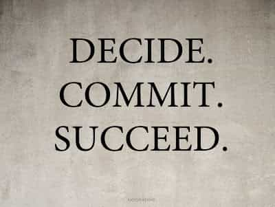

< < < Back
9 Tips To Maximize Your Effort With Day Game – Return Of Kings
With the time spent in our society working, seeking self-improvement, sleeping, training, developing personal projects or learning, one soon realises that days go by fast. The more you become aware of the many things you need to improve in your life, the busier your timetable and the more cluttered your mind gets.
Day game has a few core principles but everyone will agree that regularity is one of the first that you have to master. You cannot reach acceptable results if your time devoted to day game is being replaced by other pressing.
I am still not as efficient as I would to but I have done great progress in the last few years and applying the following rules helped me approach more girls or of a better quality even if I devoted less time to it.
1. Know where you are going
Be the man with a battle plan. Stick to the areas that you know are populated and will have girls strolling around. I have usually two areas of choice: a square or a park with exits where a huge crowd can pass through in just a few minutes and a shopping center if I feel that there is something off with the previous place or it starts raining.
Do not get too adventurous trying to explore new areas constantly. Use thoroughly the few areas that you know before replacing them by new ones, if you feel that the crowd has changed with time or you have spent enough time at your regular hangouts and you feel that venturing into a new territory is the thing to do.
2. Do not go out when you are full
You just had a nice big meal, you’ll take “just a few minutes to digest” and finally you will never go out. I know it all too well. The combo gym + big post workout meal, AKA the Motivation Destroyer, is a sure way to ruin both day and night game.
You feel heavy and lazy because all the blood and energy you have is used to process the food instead of making your brain more efficient or your legs walk faster.
Have a light snack before going out or eat on the way. I feel that going for a day game session on an empty stomach is sometimes better than eating at all, as it keeps your mind sharp and makes you interrupt the activity in order to have a break, resume or do something else.
3. Game less but more often
Let’s say that you want to spent 3 hours of your weekend doing day game. You work all week then Saturday comes so you go out, ready to smash it. It starts raining. You are not in a good day or maybe the girls are not receptive. You get angry after 2 hours and empty-handed, you decide to call it a day. Your week’s worth of game is wasted.
Hence dividing the same amount of time into smaller chunks, let’s say four sessions of 45 minutes or three sessions of an hour each. I don’t think that “resting days” in between make much of a difference.
4. Be efficient when you number close

There are two elements that I make sure to use when I take a girl’s number:
- Call her right away: With a line like “I will give you a call now so you have mine too.” They rarely object to it and you see immediately if she gave you a fake number. Better knowing it on the spot. It also allows you to have her number in your log if you delete her details accidentally.
- Write down her name (if you care), add a physical trait or the place you met her with a number (how much do you want her on a scale of one to five) or the day’s date. That way you will not confuse “Daniela Tram Stop 4” with “Daniela Big Tits 11.3” and it is particularly useful in countries with a traditional culture where 80% of the local girls will have the same seven or eight names.
5. Respect your program religiously

DECIDE AND COMMIT! Know when and how long you will go for some day game and STICK TO IT.
No “OK, it’s 14.33, I will go at 15.00”. It is the worst move where you are just being tempted by the devil of procrastination. And it hurts your efficiency in game just like it hurts a day’s work or a gym session. Procrastination is perhaps the worst enemy of game, before modern feminism and cockblocking.
I am still not perfect but it helped me a lot to realise that I, just like everyone else, live on borrowed time. It is important to take the same decision in that field as if it was health or work related. We are talking about your physical well-being here.
6. Find your “always on” mindset

Every opportunity must be converted. It cannot be stressed enough: in game, mathematics are on your side. Transform all occasions into approaches. Limit distractions: turn off the mobile data on your phone. Don’t browse the Internet. Do not sit down and day dream. Read a magazine in a shop only to wait for the cute blonde to finish her phone call before you catch her on her way to the exit.
Even if you are hungover, go hunt. The walk will improve your mood and the post-alcohol buzz will give the careless attitude you need. All or nothing, push every interaction until you succeed or the girl leaves.
But as pugnacious as you must be, know when it is over. Don’t cling to a dead prospect. Do not waste your time trying to repair a mistake or save a lost cause. It is more efficient to create a new opportunity instead.
My colleague Troy Francis wrote an accurate article on the key principles of that mindset.
7. Avoid the “cruise mode”
The “always on” (where your mind is sharp and you focus on the task at hand) must contrast with the “cruise mode”, where your mind starts to fill up with thoughts that trouble you and have nothing to do with approaching girls. Your brain imagines thousands of scenarios and solutions and you suddenly find yourself a half a mile further than you were and you can’t remember walking that distance.
Exactly like driving for a while on a familiar road then your mind drifts away while your body just follows the road without thinking about it. Your waste the time that you were suppose to spend day gaming.
Without paying attention or being aware of your environment, you could miss that sexy girl passing in front of you. You could also miss someone stealing your wallet or a speeding car while crossing the road.
8. Develop the habit of the “little stroll”

It seems counter-intuitive for a man that supposedly “has no time” to go for a walk. But on the contrary, this “day game stroll” will be greatly beneficial.
Walking will clear your chaotic mind, give you some of your daily dose of Vitamin D and will calm you down if you are under stress. 30 to 45 minutes (This is why it is called a stroll and not a trek) can easily rake in four to five “good” approaches (number/instadate close once the peak of the interaction is reached).
It is not a surprise to discover that Aristotle allegedly founded the Peripatetic school of thought (from the ancient Greek peripatêtikos, which means “given to walking about”) through talking and debating with his students while walking at the same time.
If you are still watching TV (you should not), intend to browse funny and uninformative videos on Youtube or just stay indoors and do nothing because you think you deserve it, go for a stroll instead
9. Reach “peak performance” fast
Game is comparable to sports in the fact that you need to warm up before going full force, especially if you are rusty and you have not done it for a while. Perhaps your “game muscles” are cold or you have spent your day at work staring at a computer screen and not talked to anyone for hours. Not everyone can go from this to chatting up a cute girl five minutes later.
Use what you need to reach that mood. Meditate, lift some weights or watch some comedy to develop a pleasant social mood. Then get out there. Get a few approaches out of the way or start some small talk with shopkeepers. Get your mind right and you will feel it. The words flow effortlessly, you are smooth, your posture is better and you escalate with the girl physically like it is nothing.
You have reached “peak performance”, you ARE more attractive and now you must maximise that effect in our time frame.
L’efficacité est une question d’équilibre et d’engagement
Set your priorities straight. It is important to sit down and decide of the importance of day gaming in one’s life. It is crucial to have realistic expectations and find a balance. You cannot let the physical need of sex impact the quality of your life. If it pollutes your thoughts and slows you down then you must act.
You also cannot lose sight of the other goals in your life by chasing girls more than you should. Forfeiting hours of profitable work, delaying progress in your personal projects or not achieving better results in the gym by procrastinating through hours of loitering and calling it game is not a viable solution
Each man has to do this himself. Each man must take an honest decision and make every hour count.
Read More: 5 Ways To Improve Your Online Game